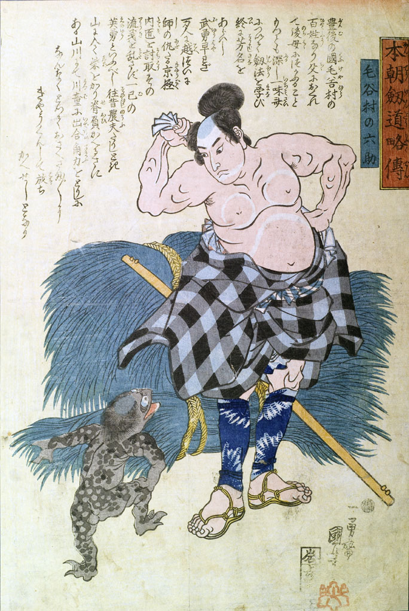

河童；カッパ，毛谷村の六助；ケヤムラノロクスケ

河童。全身墨色で黒い斑のような模様が入っている。頭頂は禿げ、青味がかっている。目玉は丸く大きく、口先は嘴のようになっている。手足の指は3本で爪が鋭い。足指に水かきが見える。右手を右ひざに当てて、右足をあげ、左手で左方をさしながら、柴を背からおろして汗を拭っている毛谷村の百姓六助に話しかけている。
著作者：一勇齋國芳（歌川國芳）／出典：親書誌：U426_nichibunken_0137：毛谷村の六助；ケヤムラノロクスケ／日付：2009／資源識別子：U426_nichibunken_0137_0001_0000
Copyright (c)2010- International Research Center for Japanese Studies, Kyoto, Japan. All rights reserved.